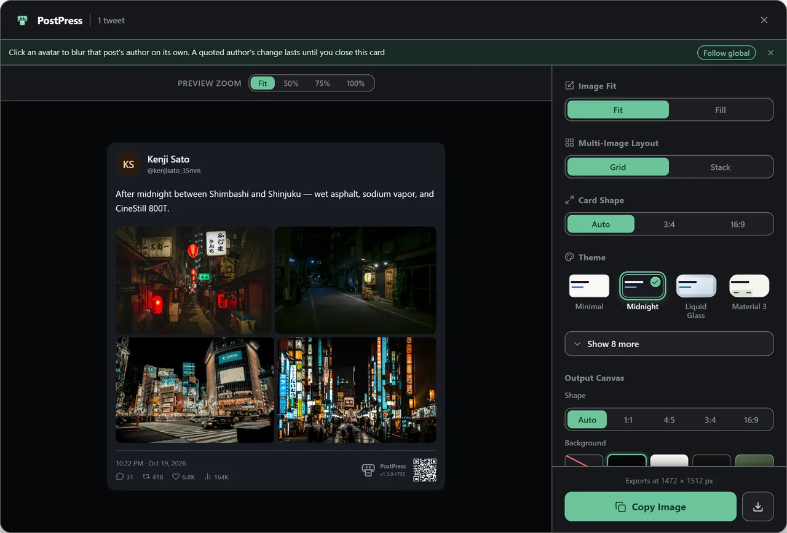
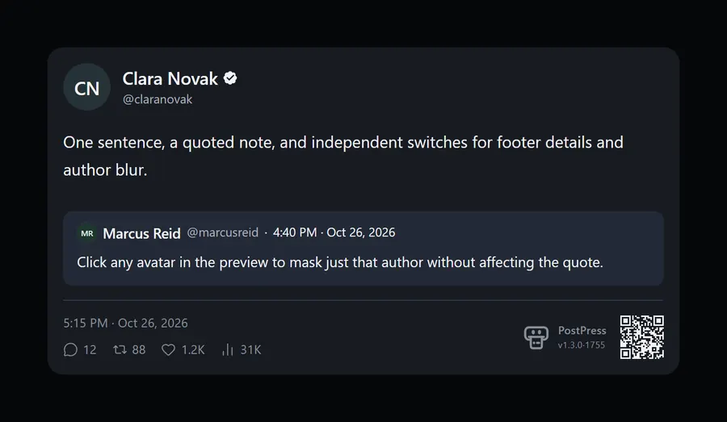

같은 스레드의 게시물은 작성자와 시간 기준으로 자동 연결되며, 광고와 무관한 답글은 걸러집니다. 추출은 두 단계로 작동합니다: 먼저 X 자체의 GraphQL 캐시를 읽고, 캐시가 없으면 렌더링된 DOM을 읽습니다. 숨기고 싶은 게시물은 클릭 한 번으로 제외할 수 있습니다.
같은 작성자의 게시물 3개(인용 1건 포함)를 하나의 카드로 내보낸 모습.
게시물
3
사진
2
인용
1
내보내기
1472 × 2854
같은 작성자의 연속 게시물을 연결하고 광고·타인 답글을 제외
긴 스레드는 플랫폼 크기 제한에 맞춰 기본 2×로 내보내기
피드에서 글자가 너무 작아질 경우 내보내기 전에 분할 안내 표시
답글이나 사이드바 없이 트윗을 깔끔하게 캡처하는 방법
발표 자료, 뉴스레터, 메신저에 공유하려고 트윗 스크린샷을 찍다 보면 아래 답글과 사이드바, 흐릿한 글씨까지 같이 찍히기 일쑤입니다. 트윗을 이미지로 저장하는 흔한 방법은 세 가지이며, 각각 분명한 단점이 있습니다.
모바일 기본 스크린샷
iOS나 Android의 물리 버튼으로 찍은 뒤 상단 상태바와 내비게이션 아이콘, 바로 아래 첫 번째 답글을 손으로 잘라냅니다. 짧은 단일 게시물엔 빠르지만 화면 해상도에 묶여 화질이 제한되고 여백이 제각각이며, 여러 게시물이 이어진 스레드는 일일이 이어 붙여야 합니다.
브라우저 영역 지정 캡처
데스크톱에서 OS 캡처 도구나 브라우저 단축키로 게시물 주변을 드래그해 잘라냅니다. 모바일보다 구도는 맞추기 쉽지만 모니터 DPI 한계와 브라우저 UI·마우스 호버 잔상이 남기 쉽고, 인용 카드나 이미지 격자가 화면 끝에 걸리면 매번 다시 잘라야 합니다.
카드로 새로 렌더링하기
화면 픽셀을 그대로 찍는 대신 게시물의 텍스트, 미디어, 스레드 구조를 읽어 깨끗한 캔버스에 새로 조판합니다. 다만 기존 웹 기반 도구들은 트윗 URL을 외부 서버에 붙여넣어야 하거나 API 제한, 워터마크, 긴 스레드 깨짐 같은 불편을 감수해야 합니다.
PostPress는 세 번째 방식을 브라우저 안에서 100% 로컬로 구현합니다. X 게시물의 카드 버튼을 누르거나(Alt + C) 테마를 고르면 선명한 3× PNG가 클립보드에 바로 복사됩니다—답글과 광고는 자동 제외되며 서버도, 로그인도 필요 없습니다.
미드나이트 테마로 로컬 렌더링된 카드—브라우저 UI도, 불필요한 답글도 없습니다.
장문 글, 인용, 다중 이미지 격자까지 그대로.
X 장문 글은 커버 이미지와 도입부까지 담아내고, 인용 게시물은 테마에 맞게 채움 또는 테두리로 표현합니다. 1~20장의 이미지는 원본 비율을 유지한 격자로 배치되며 5장 이상부터 4열로 구성됩니다(채우기 모드에서는 정사각형으로 크롭).
“필터가 아니라, 종이·선·활자의 올바른 비율입니다.”
장문 글커버, 머리말, 제목, 첫 줄을 함께 깔끔하게 담습니다.
인용선택한 테마에 따라 채움 또는 윤곽선 스타일로 표현합니다.
사진1~20장을 정사각형으로 억지 크롭하지 않고 원본 비율로 배치하며, 5장부터 4열로 정렬합니다(채우기 시 정사각형).
여덟 개의 스위치, 하나의 Studio.
테마, 캔버스, 배경, 하단 정보, 작성자 블러, 내보내기 해상도까지 모두 이 Studio 모달 하나에 모여 있습니다. 스위치를 바꾸면 왼쪽 실시간 미리보기가 즉시 따라옵니다. 설정은 자동 저장되어 다음부터는 열고 복사만 누르면 됩니다.

실제 Studio 모달: 왼쪽 미리보기와 오른쪽 제어판이 실시간으로 동기화됩니다.

모두 켜기QR, 수치, 시각, 출처.하단 끄기본문만 깔끔하게.작성자 가림작성자와 인용 작성자 동시 블러.
처음부터 끝까지 내 기기에서 실행됩니다.
계정 없음, 서버 없음, 원격 추적 없음. 조판은 격리된 Shadow DOM 안에서 이루어지고 내보내기는 브라우저 자체 캔버스가 그립니다. 카드에 들어갈 이미지를 X 이미지 서버에서 가져오는 것 외에는 어떤 데이터도 밖으로 나가지 않습니다.
타임라인을 읽지 않으며 X 계정도, X API도 필요 없습니다. X Corp.와 무관합니다.
clipboardWrite복사 버튼을 눌렀을 때만 완성된 이미지를 클립보드에 씁니다.
storage선택한 테마, 캔버스, 스위치를 로컬 브라우저에만 기억합니다.
*.twimg.com카드에 쓰일 이미지를 불러옵니다. 이 권한 없이는 캔버스가 교차 출처 이미지를 읽을 수 없습니다.
브라우저에 바로 추가하세요.
Chrome 웹 스토어에서 한 번의 클릭으로 설치하거나, 아래 3단계 안내를 펼쳐 소스에서 직접 빌드하세요.
GPL-3.0-or-later 라이선스로 배포됩니다. 수정 후 재배포 시 동일 라이선스를 유지하세요.
개발자용: 소스에서 직접 빌드 (3단계)
빌드
소스를 클론하고 의존성을 설치한 뒤 빌드합니다. 결과물은 dist/에 생성됩니다.
불러오기
chrome://extensions를 열고 개발자 모드를 켠 뒤, '압축해제된 확장 프로그램을 로드합니다'에서 dist/ 폴더를 선택하세요.
사용
아무 게시물에서나 카드 버튼을 누르고(또는 마우스를 올리고 Alt + C) '이미지 복사'를 클릭해 어디든 붙여넣으세요.
git clone https://github.com/Shirolin/postpress.git
cd postpress
pnpm install
pnpm run build # → dist/
자주 묻는 질문
실제 사용자들이 가장 많이 묻는 8가지 질문입니다.
그냥 스크린샷을 찍으면 안 되나요?
손으로 스크린샷을 자르면 답글을 피해야 하고, 긴 스레드는 여러 장 찍어 이어 붙여야 하며, 화면 DPI와 브라우저 창 요소까지 남습니다. PostPress는 한 번의 클릭으로 테마 규칙에 맞춰 깔끔하게 조판한 3× 이미지를 바로 클립보드에 넣어줍니다.
긴 카드는 피드에서 흐릿하게 보이지 않나요?
단일 게시물은 3×로 내보냅니다. 아주 긴 스레드는 크기 제한을 피하기 위해 기본 2×로 내보내며, 피드에서 글자가 너무 작아질 때는 패널이 미리 분할을 권장합니다. 내보내기 설정에서 전역 3× 전환도 가능합니다.
로그인하거나 X 계정을 연결해야 하나요?
아니요. 계정 시스템 자체가 없으며, 눈앞의 페이지에 이미 렌더링된 내용만 읽고 인증 정보에는 절대 접근하지 않습니다.
어딘가로 업로드되나요?
아니요. 이미지는 클립보드와 사용자 디스크로만 저장되며 미리보기를 닫으면 나머지는 해제됩니다. 게시물 내용은 보관되지 않습니다.
상업적으로 사용해도 되나요?
소프트웨어 자체는 GPL-3.0-or-later이므로 상업적 사용이 가능합니다. 다만 카드 안의 글과 이미지 저작권은 원작자에게 있으므로 재배포 전에 확인하세요.
어떤 브라우저에서 실행되나요?
Chrome 111 이상의 Chrome 및 Edge(Manifest V3)에서 동작합니다. Chromium 확장 API 기반이므로 Firefox와 Safari는 아직 지원하지 않습니다.
답글 없이 트윗만 스크린샷으로 찍으려면 어떻게 하나요?
게시물의 PostPress 카드 버튼을 누르거나(마우스를 올리고 Alt + C) 실행하세요. PostPress는 해당 게시물 또는 같은 작성자의 연속 스레드만 읽고 광고와 타인의 답글을 자동으로 제외합니다. 스레드 중 빼고 싶은 게시물은 복사 전에 클릭 한 번으로 제외할 수 있습니다.
트윗을 PNG 파일로 변환할 수 있나요?
네. PostPress는 브라우저 내에서 로컬로 카드를 렌더링해 3× PNG를 클립보드에 바로 복사하거나 디스크에 PNG 파일로 다운로드합니다. 매우 긴 스레드는 크기 제한을 피하기 위해 기본 2×로 처리되며 설정에서 3×로 바꿀 수 있습니다.
다음 게시물은 종이처럼 담아보세요.
한 번만 설치하면 모든 게시물 작업 막대에 자리 잡습니다. 클릭 한 번으로 클립보드에 담고 어디든 붙여넣으세요.